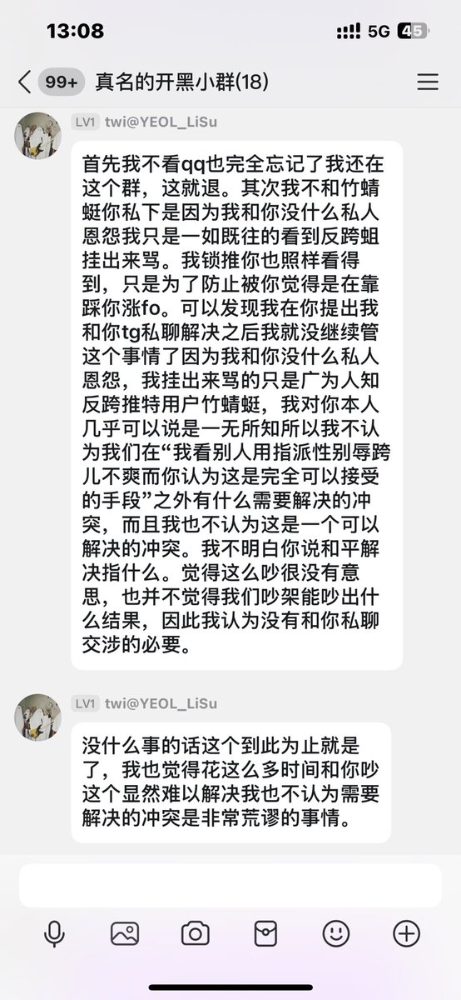

🍀🍥竹蜻蜓🍥🍀
@zqtlovekris99
@04177_realname 他说我反跨主要因为我以前确实攻击过某些特定的跨性别者，但是她逻辑自洽了，她觉得我攻击跨性别的指派性别==反跨，我从来没有不承认我攻击过跨性别，但是我也有很多mtf ftm朋友啊，为什么他们没觉得被我cue到呢？你觉得我骂到你了，那我骂的就是你

真名🏳️⚧️
@04177_realname
@zqtlovekris99 还在人身攻击还在污蔑反跨 竹蜻蜓是跨怎么可能反跨啊用脑子想想😅 给一个活生生的跨性别扣个反跨的帽子 树立个反跨典型就带着一堆mtf一起高潮了 我的评价是你才是反跨的人 因为你不知道怎么友善对待一个具体的跨性别者 https://t.co/5NBsJpOGlq